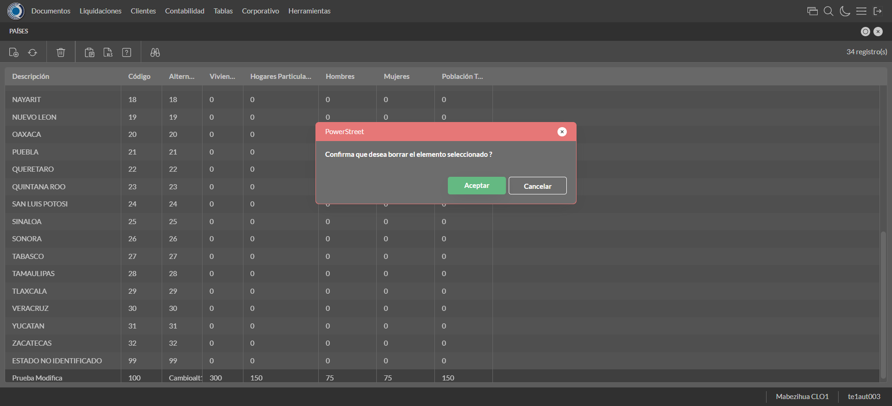
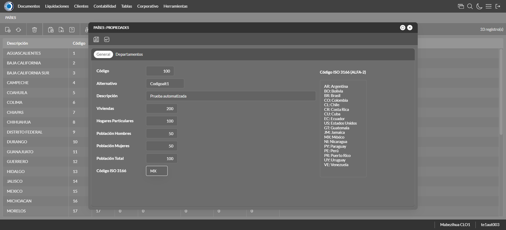
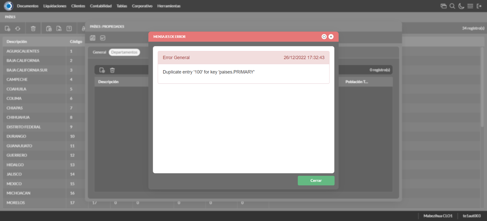
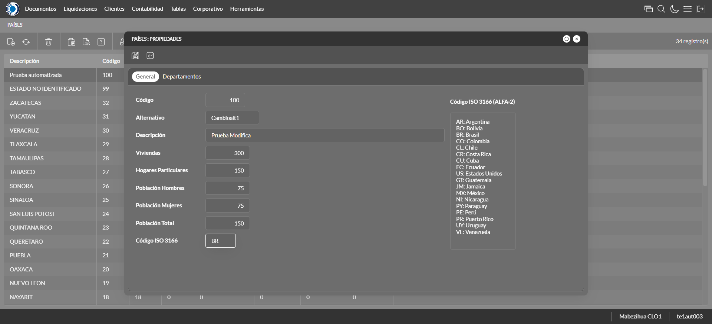

Desarrollado por : Area de Testing PWST
Fecha y hora de inicio : 2022-12-26 11:31:12
Duracion : 0:02:27.953363
Resultado : Total 8，Correctos 7 ，Errores 1 ，Taza de resultado 87.50%
Resumen 87.50% Errores 1 Fallidos 0 Correctos 7 Test realizados 8
| Caso de Prueba | Total | Correctos | Fallido | Error | Detalles | Captura del error |
| UbicacionesGeograficas.Test: Escenario 1 de Ubicaciones Geograficas | 8 | 7 | 0 | 1 | Detalles | |
test |
ft1_1: 2022-12-26 11:31:13,797 - root - INFO - Se abre el chrome
2022-12-26 11:31:14,872 - root - INFO - Entra a la URL
2022-12-26 11:31:15,011 - root - INFO - Maximiza la pantalla
Traceback (most recent call last):
File "C:\Users\jsand\AppData\Local\Programs\Python\Python310\lib\site-packages\selenium-4.4.0-py3.10.egg\selenium\webdriver\remote\switch_to.py", line 87, in frame
frame_reference = self._driver.find_element(By.ID, frame_reference)
File "C:\Users\jsand\AppData\Local\Programs\Python\Python310\lib\site-packages\selenium-4.4.0-py3.10.egg\selenium\webdriver\remote\webdriver.py", line 856, in find_element
return self.execute(Command.FIND_ELEMENT, {
File "C:\Users\jsand\AppData\Local\Programs\Python\Python310\lib\site-packages\selenium-4.4.0-py3.10.egg\selenium\webdriver\remote\webdriver.py", line 434, in execute
self.error_handler.check_response(response)
File "C:\Users\jsand\AppData\Local\Programs\Python\Python310\lib\site-packages\selenium-4.4.0-py3.10.egg\selenium\webdriver\remote\errorhandler.py", line 243, in check_response
raise exception_class(message, screen, stacktrace)
selenium.common.exceptions.NoSuchElementException: Message: no such element: Unable to locate element: {"method":"css selector","selector":"[id="mainFrame"]"}
(Session info: chrome=108.0.5359.125)
Stacktrace:
Backtrace:
(No symbol) [0x0034F243]
(No symbol) [0x002D7FD1]
(No symbol) [0x001CD04D]
(No symbol) [0x001FC0B0]
(No symbol) [0x001FC22B]
(No symbol) [0x0022E612]
(No symbol) [0x002185D4]
(No symbol) [0x0022C9EB]
(No symbol) [0x00218386]
(No symbol) [0x001F163C]
(No symbol) [0x001F269D]
GetHandleVerifier [0x005E9A22+2655074]
GetHandleVerifier [0x005DCA24+2601828]
GetHandleVerifier [0x003F8C0A+619850]
GetHandleVerifier [0x003F7830+614768]
(No symbol) [0x002E05FC]
(No symbol) [0x002E5968]
(No symbol) [0x002E5A55]
(No symbol) [0x002F051B]
BaseThreadInitThunk [0x76796BD9+25]
RtlGetFullPathName_UEx [0x77B58FD2+1218]
RtlGetFullPathName_UEx [0x77B58F9D+1165]
During handling of the above exception, another exception occurred:
Traceback (most recent call last):
File "C:\Users\jsand\AppData\Local\Programs\Python\Python310\lib\site-packages\selenium-4.4.0-py3.10.egg\selenium\webdriver\remote\switch_to.py", line 90, in frame
frame_reference = self._driver.find_element(By.NAME, frame_reference)
File "C:\Users\jsand\AppData\Local\Programs\Python\Python310\lib\site-packages\selenium-4.4.0-py3.10.egg\selenium\webdriver\remote\webdriver.py", line 856, in find_element
return self.execute(Command.FIND_ELEMENT, {
File "C:\Users\jsand\AppData\Local\Programs\Python\Python310\lib\site-packages\selenium-4.4.0-py3.10.egg\selenium\webdriver\remote\webdriver.py", line 434, in execute
self.error_handler.check_response(response)
File "C:\Users\jsand\AppData\Local\Programs\Python\Python310\lib\site-packages\selenium-4.4.0-py3.10.egg\selenium\webdriver\remote\errorhandler.py", line 243, in check_response
raise exception_class(message, screen, stacktrace)
selenium.common.exceptions.NoSuchElementException: Message: no such element: Unable to locate element: {"method":"css selector","selector":"[name="mainFrame"]"}
(Session info: chrome=108.0.5359.125)
Stacktrace:
Backtrace:
(No symbol) [0x0034F243]
(No symbol) [0x002D7FD1]
(No symbol) [0x001CD04D]
(No symbol) [0x001FC0B0]
(No symbol) [0x001FC22B]
(No symbol) [0x0022E612]
(No symbol) [0x002185D4]
(No symbol) [0x0022C9EB]
(No symbol) [0x00218386]
(No symbol) [0x001F163C]
(No symbol) [0x001F269D]
GetHandleVerifier [0x005E9A22+2655074]
GetHandleVerifier [0x005DCA24+2601828]
GetHandleVerifier [0x003F8C0A+619850]
GetHandleVerifier [0x003F7830+614768]
(No symbol) [0x002E05FC]
(No symbol) [0x002E5968]
(No symbol) [0x002E5A55]
(No symbol) [0x002F051B]
BaseThreadInitThunk [0x76796BD9+25]
RtlGetFullPathName_UEx [0x77B58FD2+1218]
RtlGetFullPathName_UEx [0x77B58F9D+1165]
During handling of the above exception, another exception occurred:
Traceback (most recent call last):
File "C:\xampp\htdocs\versiones\automatizaciones\AutoPWST\01UG\testCase\UbicacionesGeograficas.py", line 36, in test
self.driver.switch_to.frame("mainFrame")
File "C:\Users\jsand\AppData\Local\Programs\Python\Python310\lib\site-packages\selenium-4.4.0-py3.10.egg\selenium\webdriver\remote\switch_to.py", line 92, in frame
raise NoSuchFrameException(frame_reference)
selenium.common.exceptions.NoSuchFrameException: Message: mainFrame
|
|
||||
test_000: Ingresa a la base de datos |
pt1_2: 2022-12-26 11:31:18,188 - root - INFO - Escribe el usuario
2022-12-26 11:31:18,331 - root - INFO - Escribe la contraseña
2022-12-26 11:31:18,468 - root - INFO - Se dio clic en el boton ingresar
2022-12-26 11:31:19,220 - root - INFO - Ejecutar Enterprise
2022-12-26 11:31:23,275 - root - INFO - Cambia entre pestañas
|
|
||||
test_001: Abre menu y ejecuta pantalla |
pt1_3: 2022-12-26 11:31:33,679 - root - INFO - Abre la pantalla de Paises
2022-12-26 11:31:34,247 - root - INFO - La pantalla ejecutada es Paises.
2022-12-26 11:31:34,248 - root - INFO - Captura: C:\xampp\htdocs\versiones\automatizaciones\AutoPWST\01UG\report\img screen：20221226_11_31_34.png
2022-12-26 11:31:34,966 - root - INFO - Se da clic en el registro creado, para proceder a modificarlo.
2022-12-26 11:31:35,556 - root - INFO - Se hace el cambio de pestaña para continuar con el registro nuevo
2022-12-26 11:31:36,677 - root - INFO - Se da clic en el registro creado, para proceder a modificarlo.
2022-12-26 11:31:37,270 - root - INFO - Se hace el cambio de pestaña para continuar con el registro nuevo
2022-12-26 11:32:03,569 - root - INFO - Se da clic en el boton Guardar; se debe crear un nuevo registro.
2022-12-26 11:32:03,777 - root - INFO - Se da clic en el boton Guardar; se debe modificar la informacion del registro.
2022-12-26 11:32:04,381 - root - INFO - Se da clic en el registro creado, para proceder a eliminarlo.
2022-12-26 11:32:04,959 - root - INFO - Se hace el cambio de pestaña para continuar con el registro nuevo
2022-12-26 11:32:06,084 - root - INFO - Se da clic en el registro creado, para proceder a modificarlo.
2022-12-26 11:32:06,665 - root - INFO - Se hace el cambio de pestaña para continuar con el registro nuevo
2022-12-26 11:32:12,604 - root - INFO - Se da clic en el registro creado, para proceder a modificarlo.
2022-12-26 11:32:12,663 - root - INFO - Se presiona el boton 'Eliminar', para eliminar el registro.
2022-12-26 11:32:12,779 - root - INFO - Se hace el cambio de pestaña para continuar con el registro nuevo
2022-12-26 11:32:18,049 - root - INFO - Se presiona el boton 'Eliminar', para eliminar el registro.
2022-12-26 11:32:18,162 - root - INFO - Se da clic en el boton Guardar; se debe crear un nuevo registro.
2022-12-26 11:32:18,315 - root - INFO - Se da clic en el boton Guardar; se debe modificar la informacion del registro.
2022-12-26 11:32:18,915 - root - INFO - Se da clic en el registro creado, para proceder a eliminarlo.
2022-12-26 11:32:19,504 - root - INFO - Se hace el cambio de pestaña para continuar con el registro nuevo
2022-12-26 11:32:20,586 - root - INFO - Se da clic en el registro creado, para proceder a modificarlo.
2022-12-26 11:32:20,677 - root - INFO - Se presiona el boton 'Eliminar', para eliminar el registro.
2022-12-26 11:32:20,772 - root - INFO - Se da clic en el boton Guardar; se debe modificar la informacion del registro.
2022-12-26 11:32:21,353 - root - INFO - Se da clic en el registro creado, para proceder a eliminarlo.
2022-12-26 11:32:21,430 - root - INFO - Se presiona el boton 'Eliminar', para eliminar el registro.
2022-12-26 11:32:22,439 - root - INFO - Captura: C:\xampp\htdocs\versiones\automatizaciones\AutoPWST\01UG\report\img screen：20221226_11_32_22.png
2022-12-26 11:32:22,647 - root - INFO - Se confirma el eliminado del registro
2022-12-26 11:32:22,870 - root - INFO - Se presiona el boton 'Refrescar', para crear un nuevo registro igual al anterior.
2022-12-26 11:32:23,096 - root - INFO - Se presiona el boton 'Nuevo', para crear un nuevo registro.
|
 | ||||
test_002: Abre la ventana de nuevo y crear un registro |
pt1_4: 2022-12-26 11:32:23,649 - root - INFO - Se abrio la pantalla para el ingreso de un registro nuevo.
2022-12-26 11:32:23,679 - root - INFO - El campo 'Codigo' si se encuentra visible.
2022-12-26 11:32:23,706 - root - INFO - El campo 'Alternativo' si se encuentra visible.
2022-12-26 11:32:23,736 - root - INFO - El campo 'Descrición' si se encuentra visible.
2022-12-26 11:32:23,765 - root - INFO - El campo 'Viviendas' si se encuentra visible.
2022-12-26 11:32:23,793 - root - INFO - El campo 'Hogares Particulares' si se encuentra visible.
2022-12-26 11:32:23,821 - root - INFO - El campo 'Población Hombres' si se encuentra visible.
2022-12-26 11:32:23,849 - root - INFO - El campo 'Población Mujeres' si se encuentra visible.
2022-12-26 11:32:23,915 - root - INFO - El campo 'Población Total' si se encuentra visible.
2022-12-26 11:32:23,950 - root - INFO - El campo 'Código ISO 3166' si se encuentra visible.
2022-12-26 11:32:23,996 - root - INFO - Ingresa el codigo del nuevo registro
2022-12-26 11:32:24,075 - root - INFO - Ingresa el codigo alternativo del nuevo registro
2022-12-26 11:32:24,157 - root - INFO - Ingresa la descripción del nuevo registro
2022-12-26 11:32:24,217 - root - INFO - Ingresa el número de viviendas del nuevo registro
2022-12-26 11:32:24,282 - root - INFO - Ingresa el número de hogares particulares del nuevo registro
2022-12-26 11:32:24,340 - root - INFO - Ingresa el número de Población de hombres del nuevo registro
2022-12-26 11:32:24,404 - root - INFO - Ingresa el número de Población de mujeres del nuevo registro
2022-12-26 11:32:24,479 - root - INFO - Ingresa el número de Población Total del nuevo registro
2022-12-26 11:32:24,539 - root - INFO - Ingresa el Codigo ISO del nuevo registro
2022-12-26 11:32:25,550 - root - INFO - Captura: C:\xampp\htdocs\versiones\automatizaciones\AutoPWST\01UG\report\img screen：20221226_11_32_25.png
2022-12-26 11:32:26,846 - root - INFO - Se hace el cambio de pestaña para continuar con el registro nuevo
2022-12-26 11:32:27,503 - root - INFO - Se presiona el boton 'Nuevo', para crear un nuevo registro.
2022-12-26 11:32:28,055 - root - INFO - El campo 'Codigo' si se encuentra visible.
2022-12-26 11:32:28,085 - root - INFO - El campo 'Alternativo' si se encuentra visible.
2022-12-26 11:32:28,112 - root - INFO - El campo 'Descrición' si se encuentra visible.
2022-12-26 11:32:28,142 - root - INFO - El campo 'Impuesto' si se encuentra visible.
2022-12-26 11:32:28,175 - root - INFO - El campo 'Viviendas' si se encuentra visible.
2022-12-26 11:32:28,204 - root - INFO - El campo 'Hogares Particulares' si se encuentra visible.
2022-12-26 11:32:28,233 - root - INFO - El campo 'Población Hombres' si se encuentra visible.
2022-12-26 11:32:28,261 - root - INFO - El campo 'Población Mujeres' si se encuentra visible.
2022-12-26 11:32:28,288 - root - INFO - El campo 'Población Total' si se encuentra visible.
2022-12-26 11:32:28,330 - root - INFO - Ingresa el codigo del nuevo registro
2022-12-26 11:32:28,405 - root - INFO - Ingresa el codigo alternativo del nuevo registro
2022-12-26 11:32:28,488 - root - INFO - Ingresa la descripción del nuevo registro
2022-12-26 11:32:29,550 - root - INFO - Ingresa el número de viviendas del nuevo registro
2022-12-26 11:32:29,652 - root - INFO - Ingresa el número de hogares particulares del nuevo registro
2022-12-26 11:32:29,723 - root - INFO - Ingresa el número de Población de hombres del nuevo registro
2022-12-26 11:32:29,821 - root - INFO - Ingresa el número de Población de mujeres del nuevo registro
2022-12-26 11:32:29,888 - root - INFO - Ingresa el número de Población Total del nuevo registro
2022-12-26 11:32:29,940 - root - INFO - Se hace el cambio de pestaña para continuar con el registro nuevo
2022-12-26 11:32:30,545 - root - INFO - Se presiona el boton 'Nuevo', para crear un nuevo registro.
2022-12-26 11:32:31,099 - root - INFO - El campo 'Localidad' si se encuentra visible.
2022-12-26 11:32:31,129 - root - INFO - El campo 'Alternativo' si se encuentra visible.
2022-12-26 11:32:31,160 - root - INFO - El campo 'Descrición' si se encuentra visible.
2022-12-26 11:32:31,189 - root - INFO - El campo 'Viviendas' si se encuentra visible.
2022-12-26 11:32:31,219 - root - INFO - El campo 'Hogares Particulares' si se encuentra visible.
2022-12-26 11:32:31,255 - root - INFO - El campo 'Población Hombres' si se encuentra visible.
2022-12-26 11:32:31,284 - root - INFO - El campo 'Población Mujeres' si se encuentra visible.
2022-12-26 11:32:31,314 - root - INFO - El campo 'Población Total' si se encuentra visible.
2022-12-26 11:32:31,362 - root - INFO - Ingresa el codigo del nuevo registro
2022-12-26 11:32:31,464 - root - INFO - Ingresa el codigo alternativo del nuevo registro
2022-12-26 11:32:31,558 - root - INFO - Ingresa la descripción del nuevo registro
2022-12-26 11:32:31,625 - root - INFO - Ingresa el número de viviendas del nuevo registro
2022-12-26 11:32:31,692 - root - INFO - Ingresa el número de hogares particulares del nuevo registro
2022-12-26 11:32:31,758 - root - INFO - Ingresa el número de Población de hombres del nuevo registro
2022-12-26 11:32:31,830 - root - INFO - Ingresa el número de Población de mujeres del nuevo registro
2022-12-26 11:32:31,901 - root - INFO - Ingresa el número de Población Total del nuevo registro
2022-12-26 11:32:31,955 - root - INFO - Se hace el cambio de pestaña para continuar con el registro nuevo
2022-12-26 11:32:32,565 - root - INFO - Se presiona el boton 'Nuevo', para crear un nuevo registro.
2022-12-26 11:32:33,112 - root - INFO - El campo 'Código' si se encuentra visible.
2022-12-26 11:32:33,143 - root - INFO - El campo 'Alternativo' si se encuentra visible.
2022-12-26 11:32:33,172 - root - INFO - El campo 'Descrición' si se encuentra visible.
2022-12-26 11:32:33,203 - root - INFO - El campo 'Viviendas' si se encuentra visible.
2022-12-26 11:32:33,266 - root - INFO - El campo 'Hogares Particulares' si se encuentra visible.
2022-12-26 11:32:33,303 - root - INFO - El campo 'Población Hombres' si se encuentra visible.
2022-12-26 11:32:33,334 - root - INFO - El campo 'Población Mujeres' si se encuentra visible.
2022-12-26 11:32:33,362 - root - INFO - El campo 'Población Total' si se encuentra visible.
2022-12-26 11:32:33,409 - root - INFO - Ingresa el codigo del nuevo registro
2022-12-26 11:32:33,507 - root - INFO - Ingresa el codigo alternativo del nuevo registro
2022-12-26 11:32:33,610 - root - INFO - Ingresa la descripción del nuevo registro
2022-12-26 11:32:33,687 - root - INFO - Ingresa el número de viviendas del nuevo registro
2022-12-26 11:32:33,768 - root - INFO - Ingresa el número de hogares particulares del nuevo registro
2022-12-26 11:32:33,841 - root - INFO - Ingresa el número de Población de hombres del nuevo registro
2022-12-26 11:32:33,924 - root - INFO - Ingresa el número de Población de mujeres del nuevo registro
2022-12-26 11:32:34,010 - root - INFO - Ingresa el número de Población Total del nuevo registro
2022-12-26 11:32:34,093 - root - INFO - Se da clic en el boton Guardar; se debe crear un nuevo registro.
2022-12-26 11:32:34,305 - root - INFO - Se da clic en el boton Guardar; se debe crear un nuevo registro.
2022-12-26 11:32:34,492 - root - INFO - Se hace el cambio de pestaña para continuar con el registro nuevo
2022-12-26 11:32:35,093 - root - INFO - Se presiona el boton 'Nuevo', para crear un nuevo registro.
2022-12-26 11:32:35,646 - root - INFO - El campo 'Artículo' si se encuentra visible.
2022-12-26 11:32:35,674 - root - INFO - El campo 'Impuesto' si se encuentra visible.
2022-12-26 11:32:38,127 - root - INFO - Se da clic en el boton Guardar; se debe crear un nuevo registro.
2022-12-26 11:32:38,330 - root - INFO - Se da clic en el boton Guardar; se debe crear un nuevo registro.
2022-12-26 11:32:38,488 - root - INFO - Se da clic en el boton Guardar; se debe crear un nuevo registro.
|
 | ||||
test_003: Repetir el registro creado anteriormente |
pt1_5: 2022-12-26 11:32:38,773 - root - INFO - Se presiona el boton 'Refrescar', para crear un nuevo registro igual al anterior.
2022-12-26 11:32:38,995 - root - INFO - Se presiona el boton 'Nuevo', para crear un nuevo registro igual al anterior.
2022-12-26 11:32:39,562 - root - INFO - Ingresa el codigo del nuevo registro
2022-12-26 11:32:39,636 - root - INFO - Ingresa el codigo alternativo del nuevo registro
2022-12-26 11:32:39,745 - root - INFO - Ingresa la descripción del nuevo registro
2022-12-26 11:32:39,828 - root - INFO - Ingresa el número de viviendas del nuevo registro
2022-12-26 11:32:39,888 - root - INFO - Ingresa el número de hogares particulares del nuevo registro
2022-12-26 11:32:39,949 - root - INFO - Ingresa el número de Población de hombres del nuevo registro
2022-12-26 11:32:40,006 - root - INFO - Ingresa el número de Población de mujeres del nuevo registro
2022-12-26 11:32:40,067 - root - INFO - Ingresa el número de Población Total del nuevo registro
2022-12-26 11:32:40,139 - root - INFO - Ingresa el Codigo ISO del nuevo registro
2022-12-26 11:32:41,152 - root - INFO - Captura: C:\xampp\htdocs\versiones\automatizaciones\AutoPWST\01UG\report\img screen：20221226_11_32_41.png
2022-12-26 11:32:42,468 - root - INFO - Se hace el cambio de pestaña para continuar con el registro nuevo
2022-12-26 11:32:42,583 - root - INFO - Se da clic en el boton Guardar; se debe crear un nuevo registro.
2022-12-26 11:32:43,586 - root - INFO - Captura: C:\xampp\htdocs\versiones\automatizaciones\AutoPWST\01UG\report\img screen：20221226_11_32_43.png
2022-12-26 11:32:43,845 - root - INFO - Se presiona el boton 'Cerrar', para cerrar el mensaje de duplicidad de llave primaria
2022-12-26 11:32:43,930 - root - INFO - Se presiona el boton 'Cerrar', para cerrar la ventana
|
 | ||||
test_004: Modificar el registro |
pt1_6: 2022-12-26 11:32:44,045 - root - INFO - Se presiona el boton 'Refrescar', para crear un nuevo registro igual al anterior.
2022-12-26 11:32:45,363 - root - INFO - Se presiona el boton 'Codigo', para buscar un nuevo registro y poder modificarlo.
2022-12-26 11:32:47,021 - root - INFO - Se da clic en el registro creado, para proceder a modificarlo.
2022-12-26 11:32:47,698 - root - INFO - Ingresa el codigo alternativo del nuevo registro
2022-12-26 11:32:47,805 - root - INFO - Ingresa la descripción del nuevo registro
2022-12-26 11:32:47,889 - root - INFO - Ingresa el número de viviendas del nuevo registro
2022-12-26 11:32:47,975 - root - INFO - Ingresa el número de hogares particulares del nuevo registro
2022-12-26 11:32:48,065 - root - INFO - Ingresa el número de Población de hombres del nuevo registro
2022-12-26 11:32:48,147 - root - INFO - Ingresa el número de Población de mujeres del nuevo registro
2022-12-26 11:32:48,236 - root - INFO - Ingresa el número de Población Total del nuevo registro
2022-12-26 11:32:48,340 - root - INFO - Ingresa el Codigo ISO del nuevo registro
2022-12-26 11:32:49,344 - root - INFO - Captura: C:\xampp\htdocs\versiones\automatizaciones\AutoPWST\01UG\report\img screen：20221226_11_32_49.png
2022-12-26 11:32:50,621 - root - INFO - Se hace el cambio de pestaña para continuar con el registro nuevo
2022-12-26 11:32:51,778 - root - INFO - Se da clic en el registro creado, para proceder a modificarlo.
2022-12-26 11:32:52,419 - root - INFO - Ingresa el codigo alternativo del nuevo registro
2022-12-26 11:32:52,556 - root - INFO - Ingresa la descripción del nuevo registro
2022-12-26 11:32:53,646 - root - INFO - Ingresa el número de viviendas del nuevo registro
2022-12-26 11:32:53,784 - root - INFO - Ingresa el número de hogares particulares del nuevo registro
2022-12-26 11:32:53,881 - root - INFO - Ingresa el número de Población de hombres del nuevo registro
2022-12-26 11:32:53,981 - root - INFO - Ingresa el número de Población de mujeres del nuevo registro
2022-12-26 11:32:54,085 - root - INFO - Ingresa el número de Población Total del nuevo registro
2022-12-26 11:32:54,133 - root - INFO - Se hace el cambio de pestaña para continuar con el registro nuevo
2022-12-26 11:32:55,295 - root - INFO - Se da clic en el registro creado, para proceder a modificarlo.
2022-12-26 11:32:55,927 - root - INFO - Ingresa el codigo alternativo del nuevo registro
2022-12-26 11:32:56,076 - root - INFO - Ingresa la descripción del nuevo registro
2022-12-26 11:32:56,173 - root - INFO - Ingresa el número de viviendas del nuevo registro
2022-12-26 11:32:56,271 - root - INFO - Ingresa el número de hogares particulares del nuevo registro
2022-12-26 11:32:56,371 - root - INFO - Ingresa el número de Población de hombres del nuevo registro
2022-12-26 11:32:56,469 - root - INFO - Ingresa el número de Población de mujeres del nuevo registro
2022-12-26 11:32:56,591 - root - INFO - Ingresa el número de Población Total del nuevo registro
2022-12-26 11:32:56,662 - root - INFO - Se hace el cambio de pestaña para continuar con el registro nuevo
2022-12-26 11:32:57,821 - root - INFO - Se da clic en el registro creado, para proceder a modificarlo.
2022-12-26 11:32:58,463 - root - INFO - Ingresa el codigo alternativo del nuevo registro
2022-12-26 11:32:58,599 - root - INFO - Ingresa la descripción del nuevo registro
2022-12-26 11:32:58,711 - root - INFO - Ingresa el número de viviendas del nuevo registro
2022-12-26 11:32:58,826 - root - INFO - Ingresa el número de hogares particulares del nuevo registro
2022-12-26 11:32:58,941 - root - INFO - Ingresa el número de Población de hombres del nuevo registro
2022-12-26 11:32:59,054 - root - INFO - Ingresa el número de Población de mujeres del nuevo registro
2022-12-26 11:32:59,189 - root - INFO - Ingresa el número de Población Total del nuevo registro
2022-12-26 11:32:59,336 - root - INFO - Se da clic en el boton Guardar; se debe crear un nuevo registro.
2022-12-26 11:32:59,513 - root - INFO - Se da clic en el boton Guardar; se debe crear un nuevo registro.
2022-12-26 11:32:59,699 - root - INFO - Se hace el cambio de pestaña para continuar con el registro nuevo
2022-12-26 11:33:00,808 - root - INFO - Se da clic en el registro creado, para proceder a modificarlo.
2022-12-26 11:33:03,769 - root - INFO - Se da clic en el boton Guardar; se debe crear un nuevo registro.
2022-12-26 11:33:04,010 - root - INFO - Se da clic en el boton Guardar; se debe crear un nuevo registro.
2022-12-26 11:33:04,231 - root - INFO - Se da clic en el boton Guardar; se debe modificar la informacion del registro.
|
 | ||||
test_005: Eliminar el registro creado |
pt1_7: 2022-12-26 11:33:04,490 - root - INFO - Se presiona el boton 'Refrescar', para proceder a eliminar el registro.
2022-12-26 11:33:06,121 - root - INFO - Se da clic en el registro creado, para proceder a eliminarlo.
2022-12-26 11:33:06,722 - root - INFO - Se hace el cambio de pestaña para continuar con el registro nuevo
2022-12-26 11:33:07,844 - root - INFO - Se da clic en el registro creado, para proceder a modificarlo.
2022-12-26 11:33:08,450 - root - INFO - Se hace el cambio de pestaña para continuar con el registro nuevo
2022-12-26 11:33:09,574 - root - INFO - Se da clic en el registro creado, para proceder a modificarlo.
2022-12-26 11:33:10,168 - root - INFO - Se hace el cambio de pestaña para continuar con el registro nuevo
2022-12-26 11:33:11,238 - root - INFO - Se da clic en el registro creado, para proceder a modificarlo.
2022-12-26 11:33:11,334 - root - INFO - Se presiona el boton 'Eliminar', para eliminar el registro.
2022-12-26 11:33:11,500 - root - INFO - Se da clic en el boton Guardar; se debe crear un nuevo registro.
2022-12-26 11:33:11,723 - root - INFO - Se da clic en el boton Guardar; se debe crear un nuevo registro.
2022-12-26 11:33:11,959 - root - INFO - Se da clic en el boton Guardar; se debe modificar la informacion del registro.
2022-12-26 11:33:12,579 - root - INFO - Se da clic en el registro creado, para proceder a eliminarlo.
2022-12-26 11:33:13,178 - root - INFO - Se hace el cambio de pestaña para continuar con el registro nuevo
2022-12-26 11:33:14,295 - root - INFO - Se da clic en el registro creado, para proceder a modificarlo.
2022-12-26 11:33:14,883 - root - INFO - Se hace el cambio de pestaña para continuar con el registro nuevo
2022-12-26 11:33:15,961 - root - INFO - Se da clic en el registro creado, para proceder a modificarlo.
2022-12-26 11:33:16,048 - root - INFO - Se presiona el boton 'Eliminar', para eliminar el registro.
2022-12-26 11:33:16,164 - root - INFO - Se hace el cambio de pestaña para continuar con el registro nuevo
2022-12-26 11:33:17,265 - root - INFO - Se da clic en el registro creado, para proceder a modificarlo.
2022-12-26 11:33:17,352 - root - INFO - Se presiona el boton 'Eliminar', para eliminar el registro.
2022-12-26 11:33:17,476 - root - INFO - Se da clic en el boton Guardar; se debe crear un nuevo registro.
2022-12-26 11:33:17,641 - root - INFO - Se da clic en el boton Guardar; se debe modificar la informacion del registro.
2022-12-26 11:33:18,276 - root - INFO - Se da clic en el registro creado, para proceder a eliminarlo.
2022-12-26 11:33:18,871 - root - INFO - Se hace el cambio de pestaña para continuar con el registro nuevo
2022-12-26 11:33:19,937 - root - INFO - Se da clic en el registro creado, para proceder a modificarlo.
2022-12-26 11:33:20,027 - root - INFO - Se presiona el boton 'Eliminar', para eliminar el registro.
2022-12-26 11:33:20,146 - root - INFO - Se da clic en el boton Guardar; se debe modificar la informacion del registro.
2022-12-26 11:33:20,365 - root - INFO - Se presiona el boton 'Eliminar', para eliminar el registro.
2022-12-26 11:33:21,380 - root - INFO - Captura: C:\xampp\htdocs\versiones\automatizaciones\AutoPWST\01UG\report\img screen：20221226_11_33_21.png
2022-12-26 11:33:21,588 - root - INFO - Se confirma el eliminado del registro
2022-12-26 11:33:21,869 - root - INFO - Se presiona el boton 'Refrescar', para crear un nuevo registro igual al anterior.
2022-12-26 11:33:22,124 - root - INFO - Se presiona el boton 'Cerrar', para cerrar la pantalla de Categorias Fiscales.
|

|
||||
test_006: Cerrar_Navegador |
pt1_8: 2022-12-26 11:33:40,414 - root - INFO - Se cierra chrome
|
|
||||
| Caso de prueba | 8 | 7 | 0 | 1 | Taza de resultado：87.50% | |